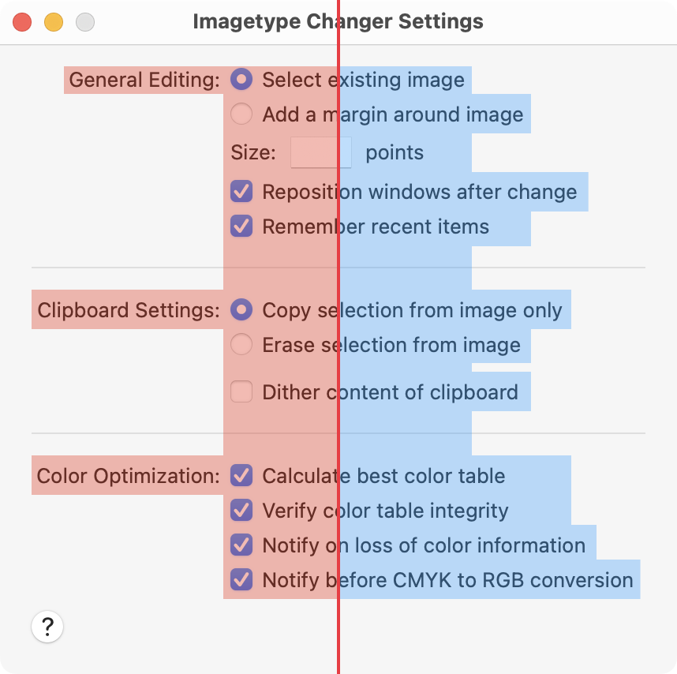

Layout Guidelines
The following sections are general guidelines that describe fundamental Macintosh layout principles of center equalization, text and control alignment, appropriate use of white space, and visual balance. Following these guidelines will help you create functional and aesthetically pleasing windows that are easy for Macintosh users to understand and use.
As you layout your window, remember to observe the principle of consistency in your decisions. If you have good reasons to break some layout guidelines, be sure to do it in a consistent way. Users tend to ignore symmetry and balance but will notice inconsistency.
Inconsistencies in a window can also lead users to conclude that the window was poorly designed and/or implemented. For example, users won’t notice if the margins inside your window edges are 18 points wide (instead of the recommended 20 points), but are likely to notice if the left margin is wider than the right one.
Positioning Regular-Sized Controls
Although there are many ways to arrange controls in a given window, there are guidelines you should follow so that your application has the clean, balanced appearance of Aqua. This section provides examples of properly designed windows and dialogs that use regular-size controls.
A Simple Settings Window
The following example showcases a very simple Settings window. Note that more advanced Settings windows would use a window toolbar to access the various sections.

This window provides a good example of a center-equalized layout. Center Equalization means that the visual weight is balanced on the left and right side of the content area. It does not mean center justification. In macOS, content should always be center-equalized in windows and panes.
Although the right side has more objects, it is balanced by the categorization labels on the left. The final result is a visually balanced window.
When labels and controls are stacked in a group, they should line up with each other vertically. Note the right alignment of the colons for the main category labels and the left alignment of the checkboxes and radio buttons. The vertical alignment of the first control in each section is also first-line aligned with the section title label.

The following are general specifications on how to arrange controls in relation to the window that contains them.
- Controls not in a group box or a tab view should be 14 points from teh titlebar or toolbar.
- There should be a 20 point margin all along the left, right, and bottom sides.
- For regular size controls, leave 8 points of space between controls.
- Leave at least 12 points of space above and below separators.
- Leave at least 18 points of space between the bottom group of controls and the buttons (This would include buttons like a Help button shown above or confirmation push buttons like OK and Cancel).
- If one control depends on the state of another, place it below and visually indent it in such a way that the leading edge aligns with the text label of the control it depends on.
A Tabbed Window
To be continued